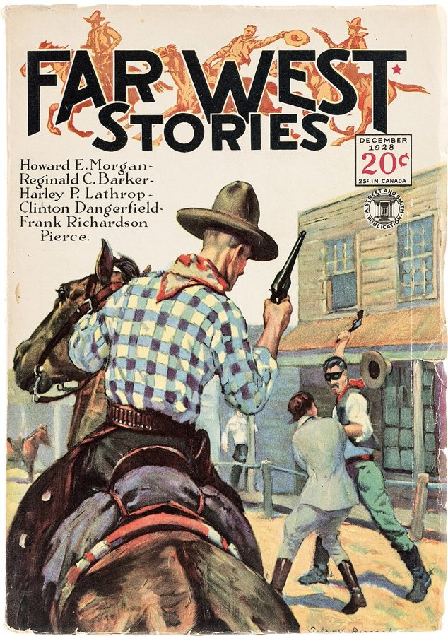
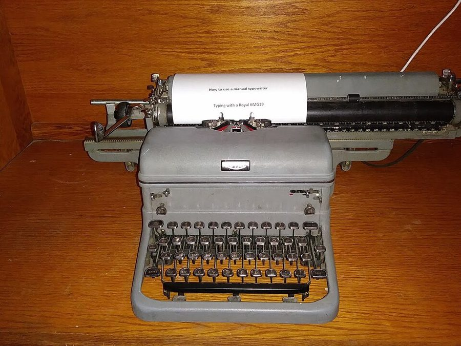
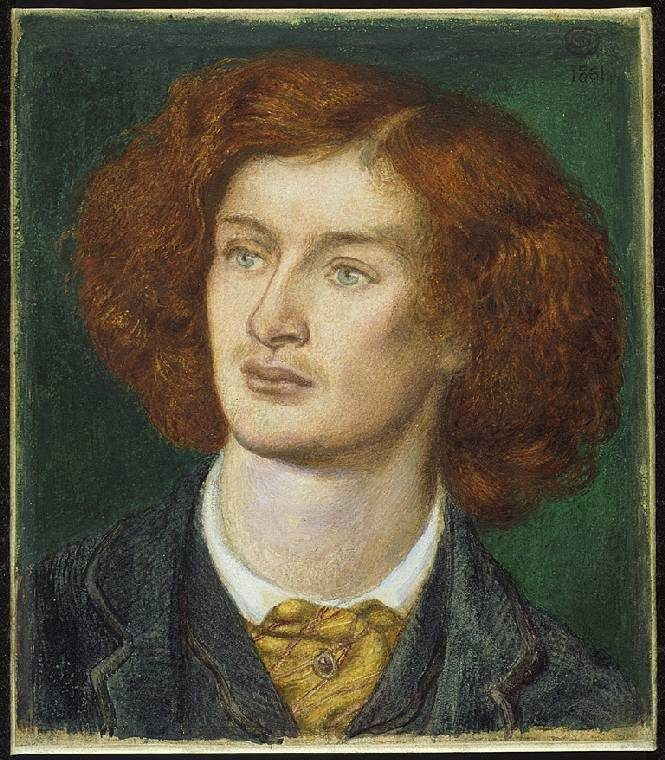

读之前
这一页是回忆录第 9、10 两章，大约从 1950 年秋到 1953 年。作者在帝国大厦十六楼的低俗杂志社当副编辑，给西部、体育、科幻月刊挑短篇、改稿子。第 9 章讲他怎么学编辑、学写短篇；第 10 章从低俗杂志讲到漫画书，也讲工作以外的日子和那位不说话的分析师。读的时候抓两条线：编辑这一行教给他什么样的文字；m1 地铁上那个「如果能让人变聪明会怎样」的念头，在他的笔记里怎样一次次冒出来。
1950 年 9 月，二十三岁。刚从布鲁克林学院读完心理学，晚上还在 CCNY 上心理学的研究生课，一个人住出租屋。每周一、五去做精神分析，分析师立的「四条戒律」里不许换工作那一条，他已经破了两次。第一部航海小说被十来家出版社退了稿。在 Fland 的摄影棚见过 Aurea，还没敢约她。刚进低俗杂志社，正在两周的试用期里。
读的时候带着这几个问题。不用先找答案，读完回来对照「检查一下理解」。
Erisman 批评一篇西部小说的那场对话里，作者每句话都接得很小心。留意他为什么小心，Erisman 讲的「好文字」又是什么样子。§3
m1 里作者在地铁上想过：如果能提高人的智力会怎样？这一页里这个念头在他的笔记里出现了几次，每次是什么样子？§3 §4 §6
m3 里分析师立了四条戒律，作者已经破了第一条两次。留意剩下三条在这一页的下场，和分析师每次的反应。§1 §7
最后一节作者说他信 Freud 的两样东西。留意是哪两样，他拿它们做什么用。§8
分节地图
这一页两章，原书在章内用空行分成 8 节。读完一节打个勾；每节下面的英文是那一节开头的几个词，在 Kindle 里搜它就能跳过去。没读的那几行先模糊着，免得提前看到内容，点一下就能看清。全页约 4100 词，一次读得完。
第 9 章 First Published Stories约 300 词 MY FIRST WEEK AT STADIUM PUBLICATIONS … 试用的第一周，和一套新公寓。留意分析师听到消息时的反应。 第 9 章（续）约 300 词 The apartment. What can I say … 这套公寓。留意作者怎样从厨房里的浴缸想通了一位大作家的旧事。 第 9 章（续）约 1500 词 The hour is late, and though … 一篇救急的稿子、几封经纪人的回信、一个旧念头。留意 Erisman 讲的删字的道理。 第 10 章 Editing Pulps and Writing Comic Books约 700 词 AUREA AND I BEGAN DATING REGULARLY. … 署名、科幻圈和一张牌桌。留意笔记里又冒出来的那个名字。 第 10 章（续）约 200 词 By 1953 the pulps suffered a … 低俗杂志的年景和一顿午饭。留意饭桌上两个人各说了什么。 第 10 章（续）约 400 词 In contrast to the decline of … 一位新上司，一份没交出去的梗概。留意梗概里有几样你在小说里见过。 第 10 章（续）约 400 词 In the fall of 1952, in … 很多事挤在一起的一段日子。留意分析师难得开口的那一次，和这一节最后一段。 第 10 章（续）约 300 词 For the purpose of exploring the … 作者讲自己的写法。留意他说的那场戏是怎么想出来的。
背景：书里默认你知道的事
按在书里出现的顺序排，标题前是节号。作者和这些人之间的事，都是作者自己的说法。
§1 低俗杂志（pulp）20 世纪上半叶美国的通俗小说月刊，用便宜的木浆纸印，纸边不裁，所以叫 pulp。西部、体育、侦探、科幻各有专门的刊物，一本二三十美分，封面画得花哨。稿费按词算，普通作者每词一美分上下，有名的能拿两分。稿子多由文学经纪人送来，没人约、自己寄来的堆在一边，叫 slush pile。作者在 m3 进了 Martin Goodman 公司旗下的 Stadium Publications，管四本西部、四本体育和一本科幻月刊里的短篇。

Street & Smith 公司的西部杂志 Far West Stories，1928 年 12 月号，定价 20 美分。不是作者编过的杂志，比他进这一行早二十多年，看看这类杂志长什么样。Sidney H. Riesenberg，公有领域，维基共享资源
一篇短篇怎样登上 Stadium 的杂志
经纪人送来的稿 灰色夹子是 Meredith 的
自己寄来的稿 slush pile
副编辑（作者） 挑稿、删改
周五 Erisman 来取 起标题、写推荐语
九本月刊 西部 4、体育 4、科幻 1
「长篇」向名家约稿 Erisman 自己编
稿费按词算：普通作者每词 1 美分，经纪人抽一成
本站示意图，按 m3 和这一页 §1 里作者的说法画。作者只管短篇；封面上的「长篇」其实是长一点的中篇，由 Erisman 向各类的名家约稿、自己编。 §1 这一页的人
Bob Erisman Stadium 的主编 m3 里收下作者试用两周。作者记得他住在康涅狄格，每周五进城取改好的稿子。
Scott Meredith（1923–1993） 文学经纪人 m3 里替素未谋面的作者写了推荐信，盼着作者多买他手下作家的稿子。
Lester del Rey（1915–1993） 科幻作家 Meredith 的客户，m3 里是他介绍作者去应聘的。
Philip Klass（1920–2010） 科幻作家 用笔名 William Tenn 写幽默科幻。他的弟弟 Morton 是作者在商船学校认识的好友（m2）。
Frederik Pohl（1919–2013） 科幻作家、编辑 §3 出场。1940 年代末到 50 年代初也当文学经纪人，用的是朋友 Dirk Wylie 留下的经纪公司的名字。
H. L. Gold（1914–1996） Galaxy 的主编 §4 出场。1950 年创办科幻杂志 Galaxy。二战服役回来后得了广场恐惧症，多年几乎不出家门，编杂志靠电话和登门的人。
Stan Lee（1922–2018） 漫画编辑 §6 出场。当时管 Goodman 公司的漫画线，后来成了 Marvel 漫画的招牌人物。作者说他是 Goodman 的女婿；记录上他是 Goodman 妻子 Jean 的表亲。作者叫这条漫画线 Timely，记录上它从 1951 年底起已经改用 Atlas 的标。
§2 冷水公寓和房租管制cold-water flat 是不供热水的老式公寓，多在旧的廉租楼里，靠煤油炉、煤炉取暖，洗澡水要自己烧。纽约从二战期间开始管制房租，老租约的房租被冻住，涨价受限，才会有 17.25 美元一个月这样的价钱（作者在 m3 里的周薪是 50 美元）。浴缸装在厨房里、平时盖上一块板子，是纽约老公寓常见的格局，冬天厨房也是最暖和的一间。

一台 Royal 牌台式手动打字机，型号 KMG。作者只说那时用的是一台旧的 Royal，没说型号。The 0utsider1，CC BY-SA 4.0，维基共享资源 §2 Thomas Wolfe 和他的编辑Thomas Wolfe（1900–1938），美国小说家，个子极高。第一部长篇《天使，望故乡》（Look Homeward, Angel，1929）的手稿极长，是 Scribner 出版社的编辑 Maxwell Perkins 帮他大段删改、理成书的；Perkins 也是 Hemingway 和 Fitzgerald 的编辑。作者说 Wolfe 30 年代在 NYU 教写作，记录上他是 1924 到 1930 年在 NYU 的 Washington Square College 当英文讲师。站在冰箱旁、拿冰箱顶当书桌写字的说法流传很广，Thomas Wolfe 学会把它算作关于他的传说之一。
§3 Hemingway 和 Erisman 的书单Ernest Hemingway（1899–1961）。A Moveable Feast（《流动的盛宴》）是他写 1920 年代巴黎岁月的回忆录，1964 年他死后才出版。Erisman 说的「知道了再删掉，作品反而更有力」，和 Hemingway 自己讲的「冰山」很像：他在 1932 年的 Death in the Afternoon 里说，冰山之所以庄严，是因为只有八分之一露在水上。Erisman 点的书里，My Old Man 写赛马，Fifty Grand 写拳击，The Sun Also Rises（1926）写斗牛，The Old Man and the Sea（1952）写海上钓鱼。Hemingway 1954 年得诺贝尔文学奖。
§3 Wells 的奇迹和 Bradbury 的腔调作者笔记里提到的 The Man Who Could Work Miracles 是 H. G. Wells 1898 年的短篇：一个普通的小职员忽然能随口行奇迹，越闹越大，惹出天大的祸，最后他许愿让一切回到开头，自己也不再有这份本事。Ray Bradbury（1920–2012）当时以抒情、怀旧的科幻短篇出名，1950 年出了《火星编年史》。照作者转述，Pohl 的意见是：除了 Bradbury 本人，谁也不该写 Bradbury 式的故事。
§4 Algernon Charles SwinburneSwinburne（1837–1909），英国维多利亚时代的诗人，诗句音韵铺张，写的东西在当时惊世骇俗。m1 里作者解剖完白老鼠的那天晚上，在英国文学选本的目录里看到这个名字，心里想：这个名字真少见。

Dante Gabriel Rossetti 画的 Swinburne，画上标着 1861 年，诗人那时二十三四岁。Dante Gabriel Rossetti，公有领域，维基共享资源 §4 科幻圈：fan、Hydra Club、文人聚会的地方1930 年代起，美国科幻有一群热心读者（fan）自己办油印刊物、开同好会，其中不少人后来当了作家、编辑、经纪人，Pohl 就是这样过来的。Hydra Club 1947 年在纽约成立，是科幻作家、编辑和同好的社交圈子，成立那天到了九个人，就借了九头蛇（Hydra）的名字。作者拿 Gold 的牌局比的两个地方：巴黎的 Les Deux Magots 咖啡馆，萨特、波伏瓦常在那里写作；纽约 Algonquin 饭店的「圆桌」，1920 年代一群作家、评论家天天在那里聚餐斗嘴。
词与短语
两类：黄边的「每个字都认识」是熟词生义、习语、行话和话里的弦外之音；其余是这里用法特别的词。斜体小字是原句里的几个词，在 Kindle 里搜它就能找到原文。
§1 第 9 章
leave someone cold
… sports writers left me cold. …
（让人）提不起兴趣
cold 是「无动于衷」，不是「冷」。Meredith 手下写西部、体育的作者没打动他。
over the transom
… sometimes called “over the transom,” or …
（稿子）不请自来
transom 是门上方的气窗。没人约、没经纪人的稿子，像是从气窗扔进编辑部的。
slush pile
… or the “slush pile,” and chose …
（编辑部里）一堆没人约的来稿
slush 是半融的雪泥。出版行话，至今还在用。
purple prose
… toned down purple prose, removed redundancies …
辞藻堆砌的文字
紫色曾是帝王的颜色，引申为浮华。说法可以追到罗马诗人贺拉斯说的「紫色补丁」：在平实的文章上缝一块华丽的布。
cold-water flat
The rent-controlled cold-water flat on West …
冷水公寓（不供热水的老式公寓）
见「背景」。flat 是一层里的一套房子；rent-controlled 是房租受管制的。
sigh … hung over the couch
… sigh of disapproval hung over the couch.
躺椅上方飘着一声不以为然的叹气
hang over 是笼罩。分析师一句话没说，作者却「听」出了不满。分析时病人躺着、看不见身后的分析师，只能听。
pass up
… one deal I couldn’t pass up …
放过（好机会）
pass up 是错过、放弃。「这样的便宜我不能不占」，作者说给沉默的分析师听。
Monday Morning Crust
… a thick and chewy Monday Morning Crust.
周一早上的那层痂
m3 里分析师的说法：隔了几天不做自由联想，心里的伤口会结一层痂，开头那段时间说不出东西。这天是星期五，作者却结了一层「又厚又有嚼劲」的痂，是在拿 crust 的另一个意思（面包皮）开玩笑：他心虚，话说不出来。
§2 第 9 章（续）
That is not a typographical error.
That is not a typographical error.
这不是印错了
作者怕今天的读者以为 17.25 美元的月租是排版出错，特意加了一句。
Oh, for …
Oh, for editors like that today.
要是今天还有那样的编辑该多好
Oh, for + 名词是感叹句式，表示「多想要……」。下一句他又照样来了一遍，说的是公寓。
§3 第 9 章（续）
leave the pump primed
… leave the writing pump primed so …
（收工时）留好引水，第二天一压就出
老式手压水泵要先灌一点水（prime）才抽得上来。比喻写作时别把想法用光，停在知道下面写什么的地方。作者说这是 Mark Twain 的话，是他自己的猜测（I’ve always suspected）。
writer’s block
To avoid risking writer’s block, I …
写作阻滞，写不出来
block 是堵塞。作者的办法是一周七天、每天早上都写。
under threat of torture
… not reveal even under threat of torture.
打死也不说
夸张的玩笑：那篇小说写得太差，用的笔名他不肯认。
pull ads
Some clients had pulled ads from …
撤下广告
pull 在这里是「撤回、拿掉」。广告撤了，版面空出来，得用 3000 词的小说填上。
First Serial Rights Only
… the words “First Serial Rights Only.”
只出售首次刊登权
serial 指报刊。投稿时写明只卖第一次在杂志上登的权利，以后结集出书的权利还在作者手里。作者从这次学到：首页右上角还要写字数。
mind you
Not for the money, mind you …
请注意，我可不是为了钱
插在句中提醒对方注意，口气有点辩解。
a penny a word
… at a penny a word, less …
每词一美分
低俗杂志的常见稿费。作者算出来是 24 美元；照他给的数，3000 词是 30 美元，扣一成应是 27 美元，书里的数和这个算法对不上。
bushwhack
I typed: “BUSHWHACK AT ARANSAS PASS.”
（从树丛里）伏击
西部小说爱用的词。Aransas Pass 是得克萨斯州墨西哥湾边的港口小城，作者跑船时在那里装过油。
a breeze
Three thousand words would be a breeze.
轻而易举
breeze 是微风，口语里指不费力的事。
what possessed you
… what possessed you to buy it.
你中了什么邪
possess 是（鬼）附身。Erisman 不知道他骂的正是作者自己写的。
not miss a cliché
He doesn’t miss a western cliché.
西部小说的套话一个不落
字面是「一个都没错过」，反话：该避开的全用上了。
bring someone along
I was hoping to bring him along.
带一带他，扶他起步
bring along 本是「带上」，这里是培养新人。作者说的「他」就是他自己。
B-list
… most of our B-list writers are …
二线的
按身价排的第二档，一线是 A-list。
lean copy
… that’s for lean copy, not padding.
精干、没有废话的稿子
lean 是瘦肉的「瘦」，copy 在出版行话里是稿子。padding 是填充物：按词算钱，就有人往稿子里注水。
shake out
… by shaking out the excess.
抖掉（多余的）
接着 Erisman 的比方：拎起每一页抖一抖，掉下来不可惜的字就删掉。
deadly emphasis
… with slow, deadly emphasis …
一字一顿，冷冰冰地加重语气
deadly 在这里不是「致命」，是「冷峻、毫不含糊」，下面那句话就是一个词一个词蹦出来的。
first shot at
… to give you first shot at …
（让你）先挑，先试一下
shot 是「尝试的机会」。Meredith 的意思是：先给你看是给你面子。
off the beam
… “were off the beam for marketing.”
不对（市场的）路子
beam 是给飞机导航的无线电波束，飞偏了就是 off the beam。
be tied down
… either of us should be tied down …
被（合同）拴住
经纪人不签他的客气说法：双方都还不必绑在一起。
soften the blow
Then he softened the blow by adding …
给打击垫一垫
先挑毛病，再说句好话，让人好受些。
flash someone back
The word surgery flashed me back to …
一下子把我带回（从前）
从电影的 flashback（闪回）来。
guinea pig
… would be used as a guinea pig.
实验品，被拿来做试验的人
字面是豚鼠，常用来做实验，引申为任何被拿去试的人。它不是猪，也不是从几内亚来的。作者在这里分清了两样：实验室里的动物是白老鼠，被当成 guinea pig 的是那个人。
§4 第 10 章
take someone under one’s wing
… I had taken under my wing …
把（新人）护在翅膀底下，照应他
母鸡护小鸡的样子。Erisman 以为作者在提携一位新作者。
come along
… first western story had come along nicely.
长进，有起色
和 §3 的 bring him along 前后呼应。
spin a good yarn
He spins a good yarn.
会讲故事
yarn 是纱线，水手行话里也指长长的故事；纺线（spin）就是编故事。
emancipate
What if a slave-robot was emancipated?
解放（奴隶）
在美国语境里会让人想到 1863 年林肯的《解放奴隶宣言》（Emancipation Proclamation）。下面问的「反机器人的偏见」也是照着种族偏见设想的。
lead story
… was the lead story in the issue.
（一期杂志的）头条
lead 读 /liːd/，排在最前面的那篇。
blurb
… the page comes loose. The blurb reads …
（标题下的）推荐语
印在标题旁边、吊读者胃口的几句话。m3 里说 Erisman 的活儿之一就是写这个。
toy with the idea
You toy with the idea of quitting …
动过……的念头（没当真）
toy 是玩具，作动词是「拿来玩玩」。
drift back down to earth
… you drift back down to earth.
慢慢落回地面，回到现实
接着上一段的飘飘然。这两段他改用 you 来讲，好像在说每一个写作的人。
fens
… known each other as fens in …
科幻迷（fan 的复数）
科幻圈的行话，照 man / men 的样子把 fans 说成 fens。不是错字。
agoraphobia
… Horace had developed agoraphobia, and rarely …
广场恐惧症
怕待在难以脱身的公共场合，重的不敢出家门。agora 是古希腊的广场、集市。
wannabe
… but for a wannabe author it …
想当（作家）的人
want to be 连读成一个词，带一点自嘲。
nickel-dime
… a regular Friday night nickel-dime poker game …
五分一毛的（小赌注）
nickel 是五分硬币，dime 是一毛。也泛指小打小闹的。
when to bluff, when to fold
… when to bluff, when to fold …
什么时候虚张声势，什么时候认输弃牌
扑克用语，也常拿来说人生里的进退。
tuition fee
… the tuition fee in this poker seminar …
（输掉的钱当）学费
把牌局说成研讨课（seminar），输的钱就成了学费，在每周 50 美元的工资里咬了个缺口。
§5 第 10 章（续）
give someone notice
… cut expenses, they gave me notice.
通知（某人）被辞退
notice 是预先的通知。反过来员工提出辞职也叫 give notice，§7 里作者就用了这个说法。
house-name
… using the house-name Arthur Lane to …
（出版社的）公用笔名
杂志社拥有的笔名，谁写都署它。这里是一个人顶着它，装作编辑部还有一班人。
confession is good for the soul
… confession is good for the soul.
坦白对灵魂有益
英语老话，源自宗教里的告解，日常说时带一点打趣。
toast the end of an era
… and toasted the end of an era.
举杯送别一个时代
toast 作动词是祝酒。
§6 第 10 章（续）
son-in-law
… working for his son-in-law Stan Lee …
女婿
作者的说法。记录上 Stan Lee 是 Goodman 妻子的表亲，见「背景」。
stable
… he referred to as his “stable.”
（手下固定的）一班写手
本义是马厩。一个经纪人、老板手下的一群作者、拳手，都可以叫他的 stable。
as a matter of course
… and as a matter of course, would …
照例，理所当然地
不是「当然是一件事」。每位固定写手的梗概照例收下一两个。
front man
As one of his front men …
（替老板）出面的人
Stan Lee 不爱见人，由编辑们出面传话。front man 也指乐队主唱、幌子人物。
on one’s own time
… writing the scripts on my own time.
利用业余时间
不占上班的钟点。own time 对的是 company time。
§7 第 10 章（续）
gloat
… rubbed his hands together and gloated.
（搓着手）得意扬扬
多指为占了上风、看人落进圈套而得意。下面那句话是玩笑：背上房贷、车贷的人就不敢随便辞职了。
throw rice
Phil and Morton Klass threw rice …
（向新人）撒米
西方婚礼的老习俗，祝多子多福。
bachelor pad
… into my cold-water bachelor pad.
单身汉的窝
pad 在口语里是「住处」，bachelor pad 多指单身男人随随便便的小窝。
break up
… they’re going to break up.
散伙
不只是恋人分手，合伙人拆伙也说 break up。
sell out to
I sold out to him, and …
把（自己的股份）全卖给他
sell out 还有「出卖、背叛」的意思，这里只是退股。
fifty-minute hour
… by giving my therapist one fifty-minute-hour’s notice.
（只提前）一节分析课的时间通知
精神分析的一节叫「一小时」，其实是五十分钟。辞工一般要提前两周通知（two weeks’ notice），作者故意只提前一节。
You are a great mistake making.
You are a great mistake making.
你在犯一个大错
分析师的英语带着德语的语序，动词扔到句尾（m3 里他也这样说话），作者照他的口音记下来，不是印错。
Thanks for the memories
… paid him. “Thanks for the memories.”
谢谢这些回忆
化用 1938 年的电影歌曲 Thanks for the Memory，那是喜剧演员 Bob Hope 一辈子的招牌歌，常在告别时唱。对分析师说这个，一半客气，一半挖苦：分析做的正是挖回忆。
shrink
… my ex-shrink was probably the model …
心理医生（口语）
从 headshrinker（猎头族缩制人头的人）来，是半开玩笑的叫法。
§8 第 10 章（续）
plumb
… free association to plumb subconscious connections.
探测（深处）
plumb 是测水深的铅锤，作动词是探到底。
breathe life into
… to breathe life into their characters …
给（人物）注入生气
像往泥人身上吹一口气，让它活过来。
earn one’s fee
… my shrink had earned his fee.
（钱）没白收
earn 是「挣到、配得上」：这笔钱花得值。
对照小说
作者在这两章里讲了小说好几样东西是从哪里来的。一张卡片一件事：回忆录里怎么说，小说里落在哪一页；点链接回到那一页。右上角是回忆录这一页的节号。
白老鼠和豚鼠 作者在旧笔记里翻到一条「Guinea Pig」：普通人靠脑部手术变成天才。「手术」让他想起大一解剖的那只白老鼠，他想：动物是白老鼠，被拿来做实验的是那个人。小说里查理在去芝加哥那天的报告里说，他最恨的就是被人当成 guinea pig。
报告 13 · 6 月 10 日 §3 差点叫 Algernon 的机器人 1952 年春，作者想写一个被解放的机器人，在同一个笔记夹里看到「Swinburne，怪名字」，想过给机器人起名 Algernon，最后叫了 Robert。第 9 章末尾他说，老鼠很久以后才成了 Algernon。小说里这个名字第一次出现，是 Burt 带查理去看一只会走迷宫的白老鼠。
报告 4 · 3 月 6 日 §4 没交给 Stan Lee 的梗概 作者给漫画写稿时记下一份梗概：智商 90 的普通人被提到天才，又被打回原样，尝过了光就回不去，还失去了他爱上的那个才貌出众的女人。小说里查理的起点低得多（报告里说智商 68），那个女人成了他的老师 Alice，最后是查理自己叫她走的。
报告 17 · 10 月 21 日 §6 导师成了 Burt 作者重提 m3 讲过的事：心理测验课的导师给他做过罗夏测验，后来变成了拿墨迹卡片考查理的 Burt。报告 2 里查理盯着卡片只看见墨水，Burt 一遍遍耐心地讲；作者的那位导师，做完测验就再也不理他（m3）。
报告 2 · 3 月 4 日 §7 分析师成了 Strauss 作者说，他的前分析师「大概」就是 Strauss 的原型。两人都坐在躺椅后面看不见的地方，都很少开口。分手的样子不同：作者只提前一节通知，分析师开口要他付清整月；小说里查理说不想再来了，Strauss 心里不安，却没有劝他留下。
报告 17 · 10 月 4 日（续） §7 躺椅上的那层痂 写长篇时作者觉得缺一场 Strauss 给查理做分析的戏，想不出来；几周后一个清早，他想起自己躺在分析师的躺椅上费力捅破「周一早上的痂」，就把这段给了查理。他没说是哪一场。本站读着最像这一次：查理躺下，脑子一片空白。
报告 17 · 10 月 4 日 §8
一个念头，攒了十几年
1945 春 1950–51 1952 春 1952–53 1959
m1 §3 §4 §6 开读之前
让人变聪明会怎样 白老鼠、Swinburne
笔记 Guinea Pig 靠手术变天才
自由的机器人 差点叫 Algernon
梗概 Brainstorm 升到天才，又打回去
中篇发表 老鼠叫 Algernon
本站示意图。第一个点是 m1 讲的，最后一个点是「开读之前」讲过的，中间三个都在这一页，年份按作者的叙述估。到第 9 章末尾，作者自己说，这还只是一个念头。 值得停下来的句子
The mouse didn’t become Algernon until much later.— §3，第 9 章最后一句，作者在笔记里把「手术」和白老鼠连起来以后。本站译：那只老鼠要到很久以后才成了 Algernon。
前面一段写他想通了「豚鼠」和白老鼠的分别，可他马上收住：这只是个念头。这一句短得像一个脚注，却跨过了好几年。读到第 10 章就知道，「很久以后」之前，Algernon 这个名字先差点给了一个机器人。作者在 m1 说过，他把经历和念头存进脑子里的地窖，等用得上再取出来；这一句写的就是一样东西在地窖里等着的那段时间。
To write the scene, I just gave that memory to Charlie.— §8，第 10 章最后一句。本站译：要写那场戏，我只是把那段记忆给了查理。
just（只是）说得很轻。可前面是几年的分析、躺椅上一次次的冷场，还有这场戏想不出来、只好搁下的那几周。前一句他还替分析师说了句公道话：诊费没白收。一路读下来，这位分析师不是叹气就是沉默，最后还要他付清整月；到这一段，那些冷场成了小说里的一场戏。
读完想一想
1. 作者用笔名写稿、通过经纪人卖给自己编的杂志，在 Erisman 面前装作替「那位年轻作者」说话（§3）。你怎么看这件事？它和编辑这份工作冲突吗？
本站的看法 本站的看法：这里有两层。对 Erisman，作者瞒了身份，替自己的稿子说情，今天的编辑部多半不允许，他自己也拖到最后一顿饭才坦白。另一层是，正因为 Erisman 不知道作者是谁，才骂得那么不留情面，作者也才听到了最直的意见，后来西部小说写得「没有套话了」。§5 里 Erisman 的回答，又让这件事成了两个人之间扯平的玩笑。
2. 这一页里的分析师不是叹气就是沉默，最后还要作者付清整月。可最后他说对方「诊费没白收」，还说对方大概就是 Strauss 的原型（§7、§8）。m3 里他说过「作家会报复」。把真人写进小说，在这里是报复、感谢，还是别的？
本站的看法 本站的看法：「作家会报复」那句是冲着心理测验导师说的。对分析师，口气不一样：他承认分析的路数对写作有用，躺椅上的冷场也成了材料。小说里被讽刺得最多的是 Nemur，Strauss 写得要温和些。本站觉得这一页更像作者在给一段花了钱、受了气的经历找个去处：写进小说，这段经历就有了用处。读者也可以读成一种不动声色的回敬。
3. 「Guinea Pig」那个念头，作者觉得故事太复杂、自己还写不了；Brainstorm 那份梗概，他觉得不该只是漫画脚本，没交给 Stan Lee（§4、§6）。你有没有一个想法放了很多年才动手？是什么让人觉得「还没准备好」？
本站的看法 本站的看法：作者自己给的理由是手艺不够，他说要等学会了写再动手。这一页能看到他在补什么：Erisman 教他删字，Pohl 告诉他别学别人的腔调，分析让他学会往下挖记忆。念头早就有了，缺的是手艺和材料。不过等待不一定都有结果，也有人等着等着就再也没写，这一点不必替作者美化。
对照今天
成立 后来的事实印证了这个说法部分成立 一部分对，一部分被后来的事改了被改写 后来的事实推翻了它，或者完全变了样书里的说法：无意识推动行为，自由联想能挖出潜意识里的联系（作者，§8）
书里 作者先说把支持还是反对精神分析的争论放在一边，然后说，作为写作的人，他坚信 Freud 的两个想法：无意识是驱动行为的力量；自由联想能探到潜意识里的联系。他拿自由联想当铲子，把相连的记忆挖出来，种进小说。
当时 1950 年代精神分析在美国精神医学里正当红，躺椅、每周几次、五十分钟一节，是作者在 m3 里经历的标准做法。
今天 「很多心理过程发生在意识之外、影响我们的判断和行为」得到大量实验支持，Kihlstrom 1987 年在《科学》上的综述常被看作科学心理学重新研究无意识的标志；但这种「认知无意识」多是快速、自动的加工，不等于 Freud 那个装着被压抑欲望的无意识。精神动力学疗法有疗效研究的支持（Shedler 2010 年的综述），也有人质疑这些证据的质量。至于自由联想能不能可靠地取回准确的旧记忆，没有得到证实；记忆研究反而表明回忆会被重新拼装。作者拿它当写作的工具，用不着它准确，这一半是他自己的经验，本站不判。核对于 2026-10。依据：Kihlstrom 1987 年《科学》综述 The Cognitive Unconscious；Shedler 2010 年《美国心理学家》综述，及 McKay 2011 年的评论。
检查一下理解
先在心里答，再点开。答错的那题，回书里把对应那一节再读一遍。
1.（§1）作者告诉分析师自己搬家了，为什么心虚？分析师什么反应？ 分析师立的第二条戒律是治疗期间不许搬家。分析师一句话没说，作者只觉得躺椅上方有一声不以为然的叹气。
2.（§3）那篇 3000 词的西部小说是怎么来的？Erisman 怎么评价它？ 广告撤了，空出 3000 词的版面，找不到长度合适的稿子，作者就自己写了一篇，用笔名、托一位经纪人送进来。Erisman 骂它套话一个不落、人物全是老一套、情节俗，只承认有一点才气，要「那位作者」学会删。
3.（§3）作者想请 del Rey 改稿，Meredith 怎么回的？结果呢？ Meredith 说 del Rey 不改稿：他拿每词两分，改一遍就等于只拿一分。作者不肯照原样买，Meredith 把稿子卖给了别的杂志。
4.（§4）作者第一篇用真名发表的小说是哪篇？笔记里的 Swinburne 那一条派了什么用场？ 作者说是 Robot Unwanted，写一个被解放的机器人，五千词，扣一成经纪人费拿了 90 美元。他想过给机器人起名 Algernon，最后叫了 Robert。有的资料（如《科幻百科全书》）把同年刊在 Marvel Science Fiction 上的 Precedent 记作他的第一篇科幻小说。
5.（§5）最后那顿午饭上，两个人各坦白了什么？ 作者坦白那些西部小说是他用笔名写的。Erisman 说：公司约来、不归作者买的那些长篇，就是他在康涅狄格家里自己写的。
6.（§7）作者为什么停了分析？分析师说了什么？ 他和 Aurea 拿积蓄投的时装摄影生意赔了，付不起每周两次的费用，只提前一节就告诉分析师不来了。分析师难得开口，用德语语序的英语说他在犯大错，这个月剩下没来的几次也得付钱。作者照付，说了句「谢谢这些回忆」。
用一句话说这一页：
精彩回顾
隔几周回来，先看这几张卡片。想不起来的那张，点节号回到这一页，再回书里那一节。
一句话： 作者在低俗杂志社学会了删字、用笔名发了第一批小说，停掉了精神分析，「让人变聪明」的念头在他的笔记里一次次冒出来。
厨房里的浴缸 每月 17.25 美元的冷水公寓，浴缸就在冰箱旁边。作者这才想通 Thomas Wolfe 怎么能把写完的稿纸一页页扔进浴缸。
§2 Bushwhack at Aransas Pass 为了填 3000 词的空版面，作者自己写了一篇西部小说。Erisman 把它骂得一无是处，作者只好说「我看那人有点才气，想带带他」。
§3 「Lester 不改稿」 作者嫌 del Rey 的稿子啰嗦，Meredith 一字一顿地说：他拿两分一个词，改一遍就只剩一分。
§3 不是豚鼠，是白老鼠 笔记里写着「Guinea Pig」，手术这个词让作者想起大一解剖的白老鼠。可那只老鼠很久以后才成了 Algernon。
§3 两份坦白 被裁之前的午饭上，作者承认那些西部小说是他写的；Erisman 笑着说，公司约来的那些长篇是他自己写的。
§5 「谢谢这些回忆」 作者付不起分析费，只提前一节通知。分析师难得开口要他付清整月，他付了钱，丢下一句歌名就走。
§7